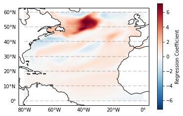

AMO example
import xarray as xr
import numpy as np
import matplotlib.pyplot as plt
def regression(data, index):
"""
Fast regression for spatial `data` onto 1d `index`.
"""
data_flat = data.reshape(data.shape[0], np.product(data.shape[1:]))
index = np.vstack((np.ones(len(index)), index)).T
beta_hat = np.linalg.inv(index.T.dot(index)).dot(index.T).dot(data_flat)
b0, b1 = beta_hat[0], beta_hat[1]
b0 = b0.reshape((data.shape[1], data.shape[2]))
b1 = b1.reshape((data.shape[1], data.shape[2]))
return b0, b1
Fast regression for spatial data onto 1d index.
datais a n-d arrayindexis a 1d array
order of data must be (time, lat, lon) order of index (time)
Can be used for calculating regression maps. For example regression of SST anomalies in the North Atlantic Region onto AMO.
time = np.linspace(1, 100, 100)
lat, lon = np.ogrid[-45:45:50j, 0:360:100j]
noise = 5 * np.sin(np.random.randn(time.shape[0],
lat.shape[0],
lon.shape[1])/2*np.pi)
data_vars = {'noise': (['time', 'lat', 'lon'], noise)}
coords = {'time': time, 'lat': lat.ravel(), 'lon': lon.ravel()}
dataset = xr.Dataset(data_vars, coords)
index = np.sin(time/2*np.pi)
a0, a1 = regression(dataset.noise.values, index)
dataset['a0'] = (("lat", "lon"), a0)
dataset['a1'] = (("lat", "lon"), a1)
dataset['a1'].plot()
<matplotlib.collections.QuadMesh at 0x7fe2d9ad0ed0>
aoi = dataset.sel(lon = 150, lat = 0, method = "nearest")
aoi.noise.plot()
[<matplotlib.lines.Line2D at 0x7fe2d597d610>]
aoi.noise.plot()
plt.plot(aoi.time, aoi['a0'].values + aoi['a1'].values * index)
[<matplotlib.lines.Line2D at 0x7fe2d58e6fd0>]
AMO example¶
ds_amo = xr.open_dataset("/fast/boergel/paper/spatial_amo_baltic_sea/data/ocean/piControl/amo/amo_ACCESS-CM2_piControl_r1i1p1f1_tos_remap.nc",
use_cftime = True).groupby("time.year").mean()
ds_amo = ds_amo.rename({"__xarray_dataarray_variable__": "amo"})
ds_amo.amo.plot()
[<matplotlib.lines.Line2D at 0x7fe2db1fea90>]
ds_north_atlantic = xr.open_dataset("/fast/boergel/paper/spatial_amo_baltic_sea/data/ocean/piControl/north_atlantic_region/ACCESS-CM2_piControl_r1i1p1f1_tos_remap.nc",
use_cftime = True)
ds_north_atlantic = ds_north_atlantic.groupby("time.year").mean()
ds_north_atlantic
<xarray.Dataset>
Dimensions: (lat: 240, lon: 321, year: 500)
Coordinates:
* lon (lon) float64 -80.0 -79.75 -79.5 -79.25 ... -0.75 -0.5 -0.25 0.0
* lat (lat) float64 0.125 0.375 0.625 0.875 ... 59.12 59.38 59.62 59.88
* year (year) int64 950 951 952 953 954 955 ... 1445 1446 1447 1448 1449
Data variables:
tos (year, lat, lon) float32 nan nan nan ... 10.040857 10.02696xarray.Dataset
- lat: 240
- lon: 321
- year: 500
- lon(lon)float64-80.0 -79.75 -79.5 ... -0.25 0.0
- standard_name :
- longitude
- long_name :
- longitude
- units :
- degrees_east
- axis :
- X
array([-80. , -79.75, -79.5 , ..., -0.5 , -0.25, 0. ])
- lat(lat)float640.125 0.375 0.625 ... 59.62 59.88
- standard_name :
- latitude
- long_name :
- latitude
- units :
- degrees_north
- axis :
- Y
array([ 0.125, 0.375, 0.625, ..., 59.375, 59.625, 59.875])
- year(year)int64950 951 952 953 ... 1447 1448 1449
array([ 950, 951, 952, ..., 1447, 1448, 1449])
- tos(year, lat, lon)float32nan nan nan ... 10.040857 10.02696
array([[[ nan, nan, nan, ..., 28.478159 , 28.486794 , 28.495424 ], [ nan, nan, nan, ..., 28.539652 , 28.547983 , 28.55631 ], [ nan, nan, nan, ..., 28.600327 , 28.608614 , 28.6169 ], ..., [ 0.3001636 , 0.2847864 , 0.2694092 , ..., 8.610812 , 8.594433 , 8.5780525 ], [ 0.28587425, 0.27279288, 0.25971144, ..., 8.599088 , 8.571521 , 8.543952 ], [ 0.27362406, 0.26380756, 0.25399098, ..., 8.622364 , 8.582942 , 8.54352 ]], [[ nan, nan, nan, ..., 28.37771 , 28.393541 , 28.40937 ], [ nan, nan, nan, ..., 28.46731 , 28.482092 , 28.496878 ], [ nan, nan, nan, ..., 28.559244 , 28.57271 , 28.586184 ], ... [ 1.2934328 , 1.3532892 , 1.4131455 , ..., 9.621411 , 9.626332 , 9.631252 ], [ 1.2816687 , 1.350839 , 1.420009 , ..., 9.674219 , 9.663379 , 9.65254 ], [ 1.2754899 , 1.3554066 , 1.4353234 , ..., 9.780383 , 9.752879 , 9.725375 ]], [[ nan, nan, nan, ..., 27.65956 , 27.677795 , 27.696032 ], [ nan, nan, nan, ..., 27.8066 , 27.821718 , 27.83684 ], [ nan, nan, nan, ..., 27.954407 , 27.965986 , 27.977571 ], ..., [ 1.304721 , 1.3412963 , 1.3778719 , ..., 9.990345 , 10.007251 , 10.024157 ], [ 1.2900645 , 1.3297983 , 1.3695322 , ..., 10.002971 , 10.005158 , 10.007346 ], [ 1.2823358 , 1.3265556 , 1.3707756 , ..., 10.054755 , 10.040857 , 10.02696 ]]], dtype=float32)
a0, a1 = regression(ds_north_atlantic.isel(year = slice(11, -1)).tos.values,
ds_amo.amo.isel(year = slice(11, -1)).values)
ds = ds_north_atlantic.drop_vars("tos")
ds['a1'] = (("lat","lon"), np.asarray(a1))
ds.a1.plot(cbar_kwargs={'label': "Regression Coefficient"})
<matplotlib.collections.QuadMesh at 0x7fe2cf783350>
In nice:
try:
import cartopy.crs as ccrs
from cartopy.mpl.gridliner import LONGITUDE_FORMATTER, LATITUDE_FORMATTER
import matplotlib.ticker as mticker
except:
print("Missing some modules for printing")
p = ds.a1.plot(cbar_kwargs={'label': "Regression Coefficient"},
subplot_kws=dict(projection=ccrs.PlateCarree(), facecolor="gray"),
transform=ccrs.PlateCarree())
p.axes.coastlines()
gl = p.axes.gridlines(crs=ccrs.PlateCarree(), draw_labels=True,
linewidth=2, color='gray', alpha=0.3, linestyle='--')
gl.xlabels_top = False
gl.ylabels_right = False
gl.ylabels_left = True
gl.xlines = False
gl.xlocator = mticker.FixedLocator([-80, -60,-40,-20,-0,20,40])
gl.xformatter = LONGITUDE_FORMATTER
gl.yformatter = LATITUDE_FORMATTER
